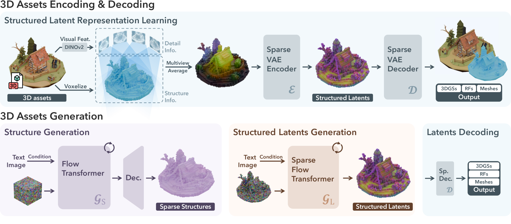
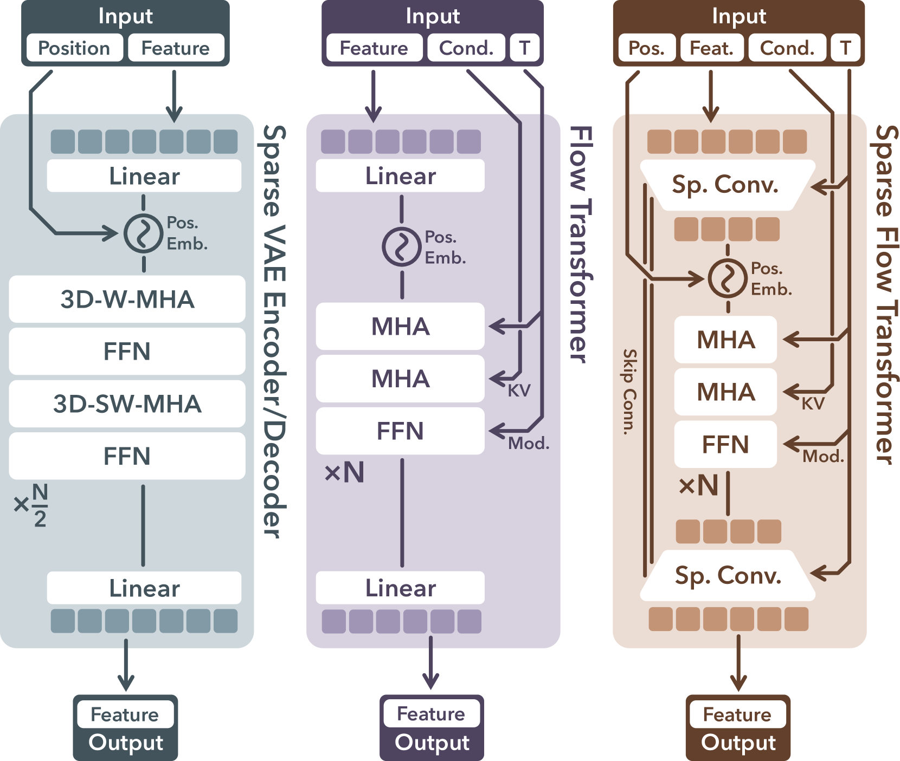
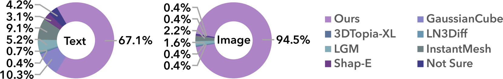

📋 论文概要
TRELLIS 是 Microsoft Research 提出的3D 生成方法，核心创新是统一的结构化潜空间表示（Structured LATent, SLAT），可解码为不同输出格式——辐射场、3D 高斯和网格。这解决了 3D 生成领域一个长期痛点：不同输出格式需要不同的生成管线。
🔧 方法 / 架构
SLAT (Structured LATent) 表示
SLAT 是 TRELLIS 的核心创新，它结合了两个组件：
- 稀疏 3D 网格：仅在物体表面附近填充体素的稀疏 3D 网格，提供结构骨架。相比密集体素，大幅减少计算量。
- 密集多视角特征：从强大的视觉基础模型（如 DINOv2）提取的多视角 2D 特征，反投影到 3D 网格上，为每个体素提供丰富的语义和外观信息。
这种组合既捕获了 3D 结构信息（通过网格），又捕获了高质量纹理信息（通过多视角特征），同时不绑定到特定的输出格式。
生成模型
- 架构：Rectified Flow Transformer，针对 SLAT 的稀疏结构设计
- 参数规模：最高 20 亿参数
- 训练数据：50 万多样化 3D 物体数据集
- 条件输入：文本或图像
多格式解码
SLAT 可通过不同的解码器输出为三种格式：
| 输出格式 | 解码方式 | 应用场景 |
|---|---|---|
| Radiance Fields (NeRF) | 体渲染解码器 | 高质量渲染 |
| 3D Gaussians | 高斯参数解码器 | 实时渲染 |
| Meshes | 网格解码器 | 游戏引擎/3D打印 |
⭐ 关键特性
| 特性 | 说明 |
|---|---|
| 统一表示 | 一个 SLAT → 多种输出格式，无需重新训练 |
| 高质量生成 | 文本/图像条件，显著超越已有方法 |
| 局部编辑 | 支持 3D 局部编辑，之前模型未提供 |
| 可扩展性 | 2B 参数 + 500K 物体训练，可进一步扩展 |
| 开源 | 代码、模型、数据均开源 |
💡 个人分析
- 解决 3D 生成的"格式困境"：3D 生成领域长期面临一个尴尬——NeRF 渲染好但不能编辑、网格可编辑但质量低、高斯介于两者之间。SLAT 通过统一表示 + 多格式解码，让用户可以按需选择输出格式，这是非常实用的贡献。
- 与 Hunyuan3D 的路线对比：TRELLIS 使用 SLAT（稀疏网格+多视角特征），Hunyuan3D 2.0 使用 DiT 生成形状 + Paint 合成纹理的两阶段管线。TRELLIS 更统一，Hunyuan3D 更专业化分工。两者代表了 3D 生成的两种哲学。
- 多视角特征的巧妙利用：将视觉基础模型的 2D 特征反投影到 3D 网格，是一种"站在 2D 巨人肩膀上"的策略。这避免了从头学习 3D 特征的数据匮乏问题，利用了 2D 领域的预训练优势。
- 局部编辑能力：这是之前 3D 生成模型普遍缺失的能力。SLAT 的结构化特性使得可以定位和修改特定区域，对实际创作工作流非常重要。
- Microsoft 的 3D 战略：TRELLIS 是 Microsoft 在 3D 生成领域的重要布局，与 Cosmos 3（世界模型）形成互补——Cosmos 3 侧重视频/世界模拟，TRELLIS 侧重 3D 资产创建。
- Rectified Flow 的选择：采用 Rectified Flow 而非标准 DDPM，这与近期的视频生成模型（如 Wan 系列）趋势一致，表明 Rectified Flow 在 3D 生成中同样有优势。
🖼️ 算法框图
注: 架构图请参考论文原文 Figure 1-5
TRELLIS 的核心架构流程:
- 输入: 文本或图像 → 条件编码器(CLIP/T5)
- 多视角特征提取: 从视觉基础模型(DINOv2)提取多视角 2D 特征
- SLAT 构建: 稀疏 3D 网格 + 多视角特征反投影 → 结构化潜在表示
- Rectified Flow Transformer: 在 SLAT 空间进行条件生成, 从噪声到数据的连续时间去噪
- 多格式解码: SLAT → Radiance Field / 3D Gaussians / Meshes (三种解码器)
💡 核心创新点
Structured LATent (SLAT) 将稀疏 3D 网格与多视角视觉特征融合, 全面捕获结构(几何)和纹理(外观), 同时不绑定到特定输出格式。一个 SLAT → 三种输出(NeRF/Gaussian/Mesh), 无需重新训练。
解决了 3D 生成的"格式困境": NeRF 渲染好但不能编辑, Mesh 可编辑但质量低, Gaussian 介于两者之间。SLAT 让用户按需选择输出格式, 同一模型满足不同场景需求。
将 DINOv2 的 2D 特征反投影到 3D 网格, 站在 2D 巨人肩膀上, 避免从头学习 3D 特征的数据匮乏问题。这是"2D 特征→3D"迁移的有效策略。
SLAT 的结构化特性支持定位和修改特定区域, 这是之前 3D 生成模型普遍缺失的能力, 对实际创作工作流非常重要。
采用 Rectified Flow 而非标准 DDPM 进行训练, 与视频生成模型(Wan 系列)趋势一致, 在 3D 生成中同样展现了训练稳定性和推理效率优势。
🎯 应用场景
| 应用领域 | 具体场景 | 输出格式 |
|---|---|---|
| 游戏开发 | 游戏资产快速生成(道具、角色) | Mesh (引擎兼容) |
| 3D 打印 | 从文本/图像生成可打印模型 | Mesh |
| VR/AR 内容 | 沉浸式场景 3D 资产 | 3D Gaussians (实时渲染) |
| 电商展示 | 商品 3D 展示模型 | NeRF / 3DGS |
| 影视特效 | 3D 道具概念设计 | NeRF (高质量渲染) |
| 建筑设计 | 建筑元素 3D 生成 | Mesh |
| 3D 编辑 | 局部修改已有 3D 资产 | 任意 (SLAT 局部编辑) |
| 合成数据 | 为 3D 视觉任务生成训练数据 | 多格式 |
🏋️ 训练策略
预训练阶段
- 视觉特征提取: 使用预训练 DINOv2 提取多视角 2D 特征, 冻结或微调
- SLAT 训练: 从 3D 资产数据集学习稀疏网格结构和特征反投影
- Rectified Flow 训练: 在 SLAT 空间从噪声到数据的连续时间生成
- 条件注入: 文本/图像条件通过交叉注意力注入 Transformer
- 渐进式训练: 从低分辨率稀疏网格到高分辨率, 逐步增加体素数量
解码器训练
- 三个独立解码器: 分别针对 NeRF, 3D Gaussians, Meshes 训练
- 共享 SLAT: 三个解码器共享相同的 SLAT 输入, 但有独立的解码头
- 2B 参数: 生成模型 + 解码器总计约 20 亿参数
📊 数据集构建
| 数据类型 | 规模 | 来源 | 处理方式 |
|---|---|---|---|
| 3D 物体数据 | 50 万 | Objaverse, ShapeNet 等 | 多视角渲染, 网格清理 |
| 多视角渲染 | 每个物体数十视角 | Blender 渲染 | 不同光照/背景/视角 |
| 文本标注 | 50 万条 | GPT 生成的物体描述 | 多样化, 详略结合 |
| 图像条件 | 多视角图像 | 渲染 + 真实图像 | CLIP 编码 |
🔬 损失函数
Rectified Flow 损失 (生成)
L_RF = E_{t,x0,ε} ||v_θ(x_t, t, c) - (x1 - x0)||²- 在 SLAT 空间操作, x0 是噪声, x1 是真实 SLAT 表示
- c 是文本/图像条件, 通过交叉注意力注入
解码器损失
- NeRF 解码: 渲染损失(L1 + LPIPS) + 密度场约束
- 3D Gaussian 解码: 渲染损失 + 高斯参数约束(不透明度、协方差)
- Mesh 解码: Chamfer 距离 + 法向量一致性 + 纹理损失
SLAT 正则化
- 稀疏性约束: 鼓励 SLAT 表示的稀疏性, 减少计算量
- 多视角一致性: 不同视角特征反投影到同一 SLAT 应保持一致
🔄 技术路线对比与演进
3D 生成技术演进
| 方法 | 表示 | 条件 | 输出格式 | 年份 |
|---|---|---|---|---|
| DreamFusion | NeRF | 文本 | NeRF only | 2022 |
| Point-E / Shap-E | 点/隐式 | 文本 | 单一格式 | 2023 |
| LGM (Large Gaussian Model) | 3D Gaussians | 多视角图像 | Gaussian only | 2024 |
| TRELLIS | SLAT | 文本/图像 | NeRF + GS + Mesh | 2024 |
| Hunyuan3D 2.0 | DiT + Paint | 文本/图像 | Mesh (两阶段) | 2025 |
TRELLIS vs Hunyuan3D 路线对比
| 维度 | TRELLIS | Hunyuan3D 2.0 |
|---|---|---|
| 哲学 | 统一表示 + 多格式解码 | 专业化分工 (形状+纹理) |
| 表示 | SLAT (稀疏网格+多视角特征) | DiT 生成形状 + Paint 合成纹理 |
| 输出 | 3 种格式 (NeRF/GS/Mesh) | Mesh (高质量) |
| 编辑 | ✅ 局部编辑 | 有限 |
| 参数量 | 2B | 更大 |
🖼️ arXiv HTML 论文原图
以下图片从 arXiv HTML 版本直接提取，展示论文原始架构图和结果对比。
Figure 1: TRELLIS 高质量 3D 资产生成示例

Figure 1: TRELLIS 生成的各种格式高质量 3D 资产（文本/图像提示），包括 3D 高斯、辐射场和网格输出，约 10 秒生成。
Figure 2: TRELLIS 方法概览 — SLAT + 双阶段生成

Figure 2: 方法概览。采用结构化潜空间表示 (SLAT) 编码 3D 资产，在稀疏 3D 网格上定义局部潜变量表示几何和外观。两个专门的 Rectified Flow Transformer 分别生成稀疏结构和局部潜变量。
Figure 3: 编码、解码和生成的网络结构

Figure 3: (a) 编码器、(b) 解码器、(c) 生成模型的详细网络结构。
Figure 4: 生成的 3D 资产展示（高斯和网格）

Figure 4: TRELLIS 创建的高质量 3D 资产，以高斯和网格表示，基于 AI 生成的文本或图像提示。
Figure 5: 与前代方法的视觉对比

Figure 5: 生成 3D 资产的视觉对比，TRELLIS vs 前代方法。
Figure 6: 文本/图像到 3D 生成的用户研究

Figure 6: 文本/图像到 3D 生成的用户研究结果。
📐 算法框图
TRELLIS 架构概览：文本/图像 → 结构化 3D Latent (SLAT) → 3D 资产输出
- 输入：文本描述 或 单张图像
- 条件编码：文本 → T5 编码器；图像 → DINOv2 编码器
- 生成：条件特征 → DiT (Diffusion Transformer) → 生成 3D Latent (SLAT)
- 解码：SLAT → 多格式输出（3DGS / Mesh / Voxel / Radiance Field）
SLAT (Structured Latent) 表示：稀疏 3D 网格 + 每个占用体素的局部 Latent 特征向量。结合了体素的空间结构性和 Latent 的表达力。
关键设计：使用稀疏 Voxel 结构作为骨架，每个体素关联一个 Latent 向量，通过注意力机制从条件生成。最终通过不同的 VAE 解码器输出多种 3D 格式。
💡 核心创新点
🎯 应用场景
| 场景 | 具体应用 |
|---|---|
| 游戏开发 | 快速生成 3D 游戏资产（道具、角色、场景） |
| 影视特效 | 从概念图生成 3D 模型 |
| 电商展示 | 商品 3D 模型自动生成 |
| AR/VR 内容 | 快速创建 AR 场景中的 3D 物体 |
| 3D 打印 | 生成可打印的 Mesh 模型 |
| 设计辅助 | 设计师快速原型生成 |
| 世界模拟 | 与 Cosmos 3 结合，生成 3D 资产 → 放入世界模拟 |
🏋️ 训练策略
训练阶段
- 阶段 1 — VAE 训练：训练 3D VAE 将 3D 资产编码为 SLAT 表示，并解码回多种格式
- 阶段 2 — Latent 扩散训练：在 SLAT 空间训练 DiT（Diffusion Transformer），以文本/图像为条件
- 阶段 3 — 后训练：美学质量优化、细节提升
关键设计
- 稀疏 Voxel 结构：只在物体表面区域分配体素，避免空区域浪费
- 流匹配：使用 Flow Matching 而非 DDPM，训练更稳定
- 多分辨率训练：从低分辨率 Latent 逐步提升
- 条件注入：cross-attention 将文本/图像特征注入 DiT
📊 数据集构建
训练数据
- Objaverse：大规模 3D 物体数据集，提供高质量网格 + 纹理
- 内部数据集：500K+ 经过清洗的 3D 资产
- 数据增强：多视角渲染、随机旋转/缩放、背景变化
评测基准
- Objaverse 子集（物体级生成质量）
- Google Scanned Objects（GSO）
- CLIP 分数（文本-3D 一致性）
- 人类评估（美学质量、几何质量、纹理质量）
📐 损失函数
VAE 训练损失
- 重建损失：L_recon = L1 + LPIPS（感知损失）
- KL 正则化：L_KL = D_KL(q(z|x) || N(0,1))，约束潜空间
- 对抗损失：判别器约束渲染质量
DiT 训练损失
- Flow Matching 损失：L = E_{t,x0,ε} || v_θ(z_t, t, c) - (z1 - z0) ||²
- z_t 为 SLAT 潜在表示的中间状态
- c 为文本/图像条件
🔄 技术路线对比与演进
3D 生成路线对比
| 方法 | 表示 | 输入 | 输出格式 | 质量 |
|---|---|---|---|---|
| TRELLIS | SLAT (稀疏 Latent) | 文本/图像 | 3DGS/Mesh/Voxel/RF | 高 |
| Instant3D | Triplane | 文本 | NeRF | 中 |
| Shape-E | 隐式函数 | 文本 | Mesh/Voxel | 中-低 |
| Point-E | 点云 | 文本 | 点云 | 低 |
| DreamGaussian | 3D 高斯 | 文本 | 3DGS/Mesh | 中 |
| Hunyuan3D | 3D-DiT | 文本/图像 | Mesh | 高 |
演进脉络
- NeRF 优化（2020-2022）：SDS loss + per-scene 优化，慢但质量高
- 隐式生成（2022-2023）：Shape-E/Point-E，快速但质量受限
- Triplane 生成（2023）：Instant3D，三平面表示，质量提升
- 高斯生成（2023-2024）：DreamGaussian/GaussianDreamer，直接生成高斯
- SLAT 生成（2024）：TRELLIS，结构化 Latent，多格式输出
- 3D-DiT（2025）：Hunyuan3D，大规模 DiT 直接生成 3D